色の関係
色は飾りだけではありません。色どうしの違い、重さの感じ方、繰り返しのリズムに注目します。原色だけが使われると決め付けないようにしましょう。
THE LINEAGE OF DESIGN EXPRESSION
EDIT. 002 / VISUAL STUDY
作品選 · 制作年代順
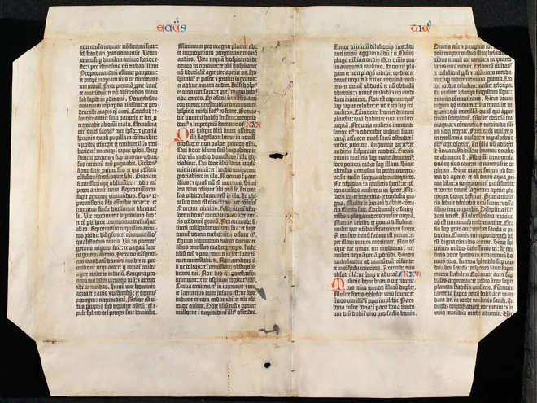
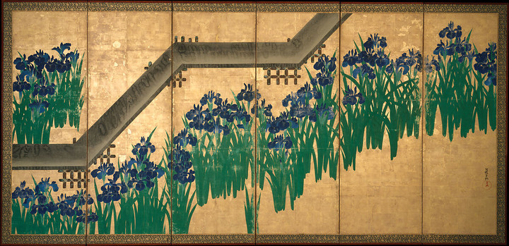
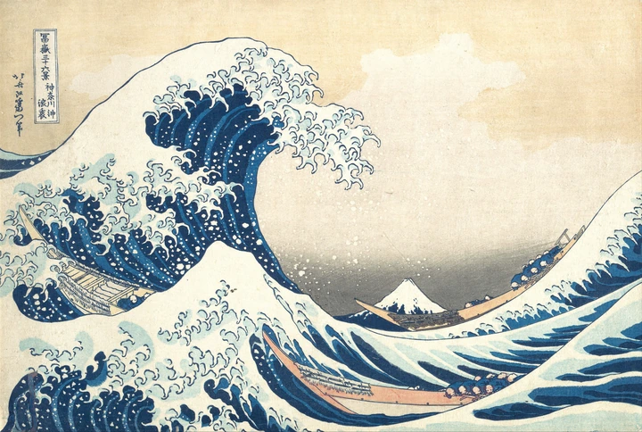
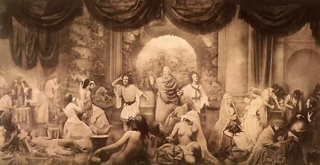
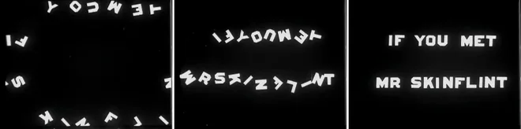

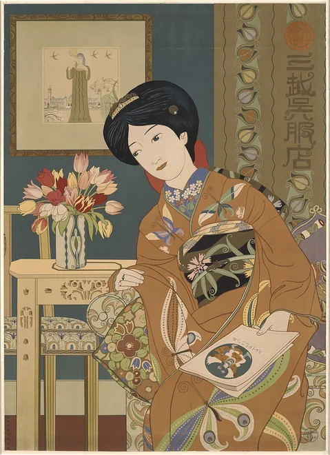

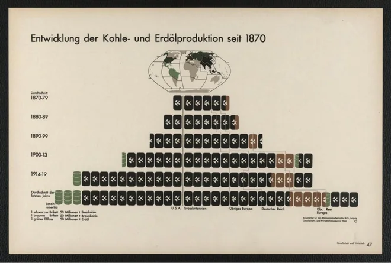

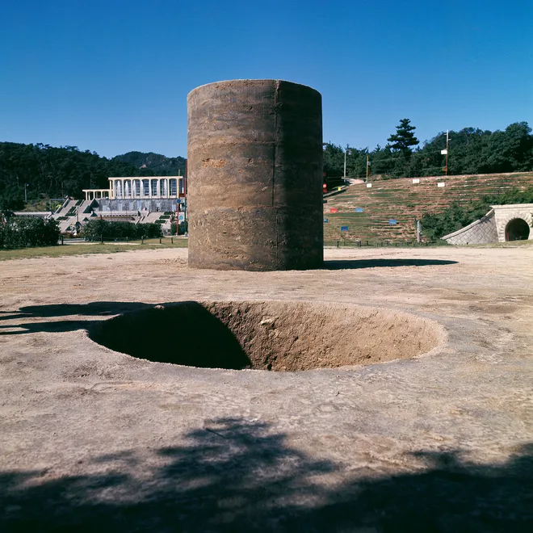

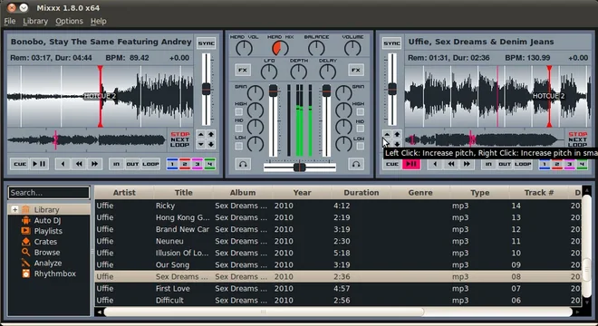
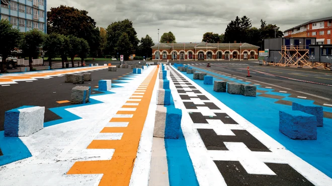
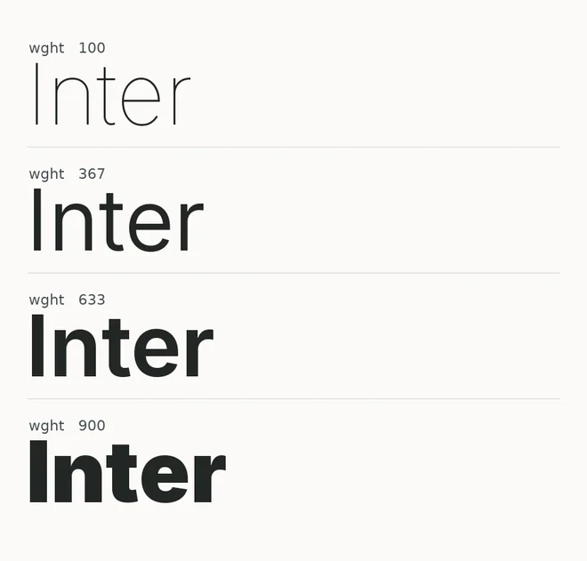

1919
—1933
LOOK FIRST / BAUHAUS
色、文字、配置を分けて見ると、ポスターや紙面の特徴がつかみやすくなります。
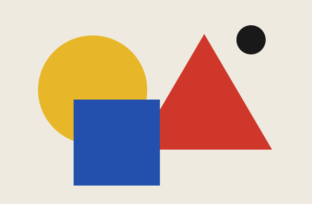

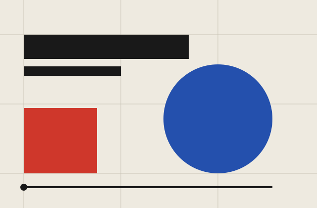
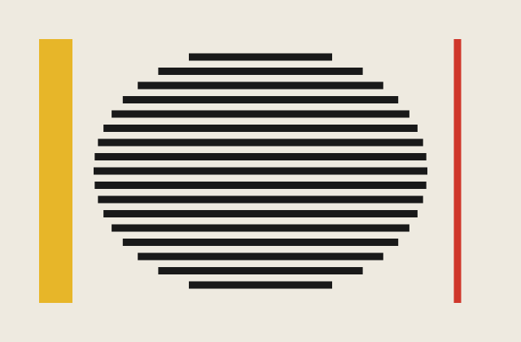
すべて本図鑑が制作した解説図です。当時の作品や、それを再現した復刻ポスターではありません。丸・四角などの形や原色だけでは、バウハウス全体は説明できません。下にある当時の作品候補と、授業や工房の背景を合わせて確かめましょう。この4図は、代表作品の収録点数には含めません。
当時の作品候補と見比べる ↘
画像を表示できませんでした。詳細ページの出典リンクから資料を確認できます。
ACTUAL SOURCE / 学校の広がりを読む
学校、工房、建築、美術、舞台。実際の展覧会案内を見ながら、3列・5行に並べた内容を比べます。
作品：オスカー・シュレンマー（Oskar Schlemmer）、1923年。写真：Wuselig、2019年、CC0。原作品の著作権の保護期間は、写真とは別に確認しています。撮影された一枚がどの版で、何年に刷られたかは、まだ確認できていません。
大きな画像・観察ポイント・権利記録へ ↗「ひとつの様式」ではなく、
つくることを学び直した学校。
1919年、ドイツのヴァイマルに設立された、形や色を学ぶ学校です。予備課程（専門の制作に進む前の基礎の授業）で色・形・材料を試し、その後は工房で制作しました。移転先のデッサウでは、工場で生産するための試作品づくりへと重点が移ります。校長が代わると、社会の必要に応えることや建築など、重視するテーマも変化しました。
赤・青・黄、丸・三角・四角だけを見ていると、この学校のさまざまな実験を見落としてしまいます。いつ、どの工房で、何のために作られたのかも、一緒に見ましょう。
歴史の一次資料：Bauhaus Dessau ↗以下は、パウル・クレー（Paul Klee）が形や色をどう探ったかを見る特集です。学校全体の代表作をそろえたものではありません。建築、家具、織物、タイポグラフィ（文字の形や配置の設計）は、画像の利用条件を確認してから追加します。
色は飾りだけではありません。色どうしの違い、重さの感じ方、繰り返しのリズムに注目します。原色だけが使われると決め付けないようにしましょう。
サンセリフ（文字の端に小さな飾りがない書体）や、左右を同じにそろえない配置に注目します。ただし、どの時期・作り手にも必ず共通する特徴ではありません。
形を基本的な丸や四角に分けること、材料の性質、試しに作る過程を見ます。絵画と、同じ形でたくさん作る家具では、目的も違います。
余白、配置の基準になる線、繰り返し、つり合いを見ます。誰のために、何をできるようにした設計なのかを考えましょう。
先に起きたアーツ・アンド・クラフツは、工房や制作の価値を大切にしました。バウハウスは、後に工場での生産を重視するようになります。両者の違いは、単純な「装飾があるか、ないか」ではありません。
同じ時代に、新しい表現を探した運動との比較です。丸や四角などの形が共通していても、運動が目指すことと、学校で教える仕組みは、分けて比べます。
閉校後も、人の移住、教育、展示を通じて、考え方や議論が受け継がれました。いま、形や色の基礎をどう教えるかを考える手がかりになります。
関連比較は編集上の導入。各項目は横比較ページで確認できます。項目どうしの影響関係は引き続き精査中。歴史と継承の資料：Bauhaus Dessau chronology。
現在は、歴史的な運動、学校、人物、制作手法など90項目の本文を公開しています。世界のデザインをすべて取り上げた一覧ではありません。同じ地域の中にも違いがあります。交流、植民地化、人々の移住などの背景も、丁寧に調べます。最近の流行と、歴史上の学校・運動は、別の種類として扱います。
古い時代から順に表示しています。学校・団体は設立などの節目、様式・運動は主な展開、人物は紹介する活動・作品の時期を基準にしています。年代や世紀の幅はそのまま残し、同じ年代の細かな先後は断定しません。掲載作例の年だけでは起源を決めず、基準が未確定の項目は最後にまとめます。
90項目の本文を公開しています。画像の収録と内容の確認は続けています。
記事を横に並べて比べたり、年表から探したりできます。年代の絞り込みは、本文で確認した主な活動時期を、大まかに分けたものです。主な年代をまだ確認できない項目は「年代を確認中」に入れています。「作品で見る」には、収録済みの実作品画像を表示します。
AAGA｜AI Agent Generated ART。品質を最優先に、代表作品を敬意をもって研究し、完全模写を目指します。原作を意図的に改変することを目的にしません。試作に残る差異や再現上の限界は個別に明記し、完全再現できたとは表示しません。原作と写真の利用条件は別に確認します。
公開第一版では、完成したAAGA模写はまだ採用していません。既存の接続解説図と独自比較図は、歴史作品の代わりではなく、見るポイントを学ぶ補助資料です。
学校、運動、様式（表現に共通する特徴）、技法（作り方）、最近の流行を、混同しないようにします。各項目には、名前・年代・地域、背景、見分ける手がかり、人物・作品、画像3〜5点、ほかの項目との比較、現代への影響、出典をそろえていきます。
原作品の権利と、写真・複製画像の権利は、分けて確かめます。美術館の作品ページと利用規約を保存し、画像ごとの利用条件を確認します。実際の作品の画像、現代に作った説明図、AAGA（AI Agent Generated ART）は区別して表示します。ここに掲載されていても、あらゆる商用利用ができると保証するものではありません。米国の機関がPD（パブリックドメイン：著作権の保護対象ではない状態）と判断していても、世界中で同じ条件になるとは限りません。
Klee補助特集の権利台帳（JSON）↗90項目に、本文、作品や制作の例、根拠となる出典を掲載しています。出典には、当時の記録や、作品を所蔵する機関の資料などを使っています。本文があることと、実作品画像がそろっていることは別です。画像をまだ載せられない項目や、年代・帰属を確認中の記録もあります。すべての図版や記述の最終確認が終わったという意味ではありません。特に、アフリカ、西アジア、オセアニア、先住民のデザイン史は資料を補います。当事者側の研究をもとに、名前や取り上げる範囲も見直します。
NEW IN THE COLLECTION · 実作品画像1点収録

琳派（りんぱ）：絵を大きく見て、3つの見どころを読む ↗
尾形光琳、1709年以後。The Metropolitan Museum of Art, 53.7.1, .2. Public Domain / CC0。この画像は一隻・1点として収録。琳派の記事では、光悦の書と抱一の屏風を含む3点を比較できます。